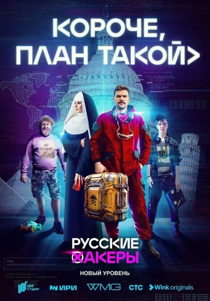

Сериал · 2023 · Комедия
Российский комедийный сериал о стартапе, занимающемся «подписочными сервисами», и его основателях, которые изобретают продукт, гонятся за инвесторами и постоянно «пересматривают план». Сценарий написан людьми, которые знают эту «кухню» изнутри: презентации, метрики, отеческий тон инвесторов, бесконечные переработки и коллективное самообман. Юмор здесь острый, а ситуации — до боли узнаваемые. Короткие серии идеально подходят для вечера после рабочего дня в IT.
A Russian comedy series about a 'subscription services' startup and its founders inventing a product, chasing investors and constantly 'revising the plan'. Written by people who have seen this world: pitching, metrics, investor paternalism, endless overtime and collective self-deception. The humor is edgy, the recognition is total. Short episodes, perfect for an evening after a day in IT.
← Вернуться в каталог IT Movies